Launching the hardware company's e-commerce platform
Disclaimer: This project was completed thorough the General Assembly UX Design Immersive Bootcamp. Progress Hardware was not affiliated with this project.
Preface
Progress Hardware features curated product selections and takes pride in being a service-driven neighborhood destination. For many of its customers, Progress Hardware is the only hardware store they go to.
Overview
Challenge: Loyal Progress Hardware customers want better product purchasing convenience, while still experiencing high quality customer service.
Solution: Design an e-commerce site that provides the convenience of online shopping while maintaining the personalized values that Progress Hardware embodies.
Platform: Web
Time: 2 weeks
Deliverables
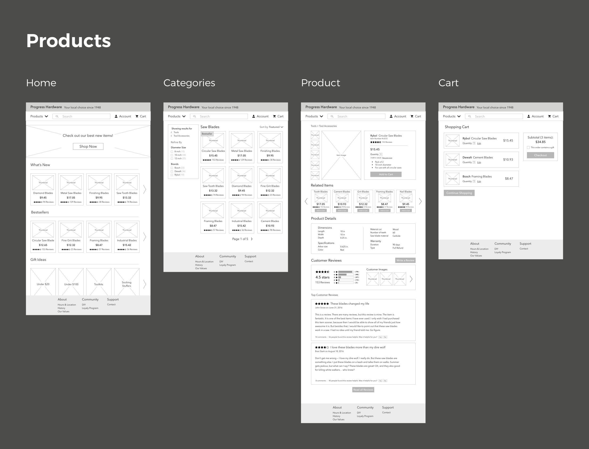 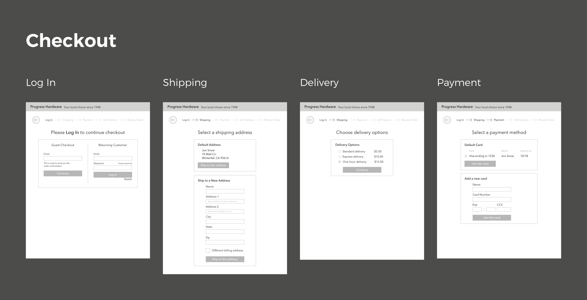 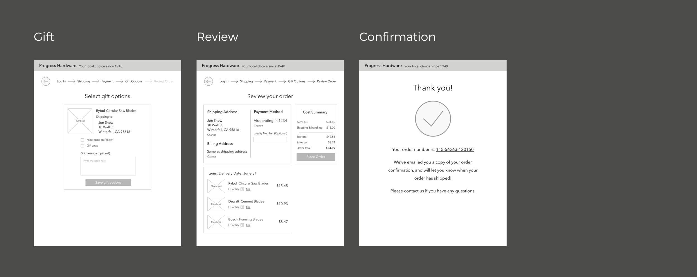You can access the full-resolution and interactive prototype here.
Case Study
Design Process
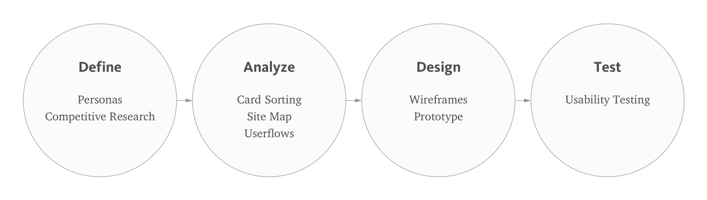Personas
Progress Hardware provided their three main user types, which I turned into personas to understand the users’ pain points.
Thomas is the primary persona, under the assumption that the expansion of Progress Hardware into e-commerce will entice users who are not hardware-savvy to use the site more.
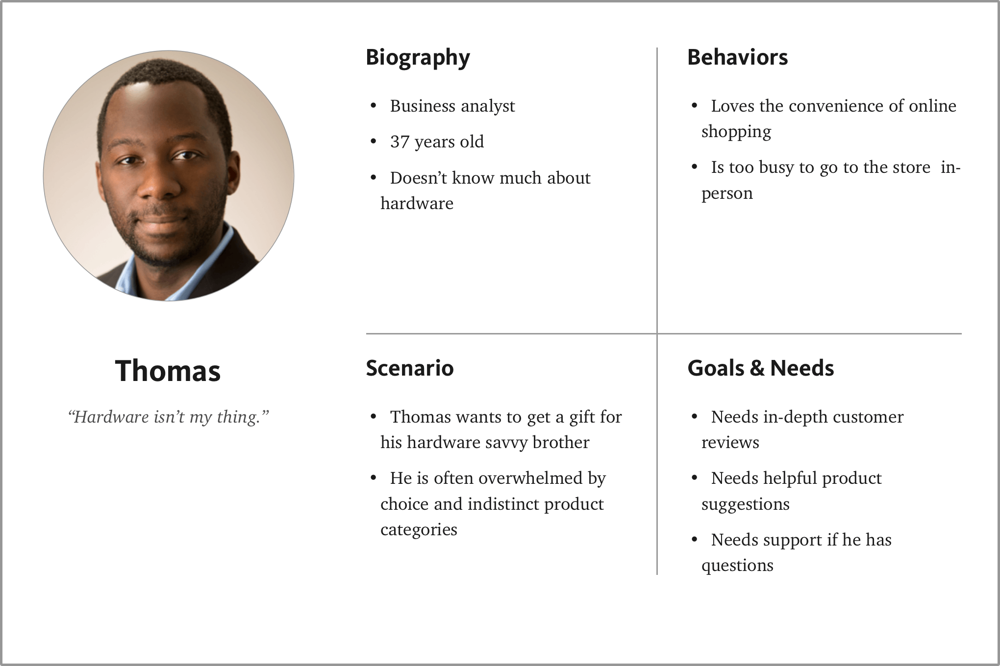Lisa, Thomas and Andy have five common needs:
- clear product categorization for a seamless shopping experience
- detailed product information to ensure proper product selection
- an efficient checkout process to save time
- customer support to help find products if needed
- a sense of community that emulates the Progress Hardware experience they know and love
Competitive Analysis
Progress Hardware’s direct competition are local hardware stores in San Francisco that have both physical and online stores. Based on Lisa, Thomas, and Andy’s key needs, I did a competitive analysis to see how Progress Hardware could fill in potential gaps where the competition fell short.
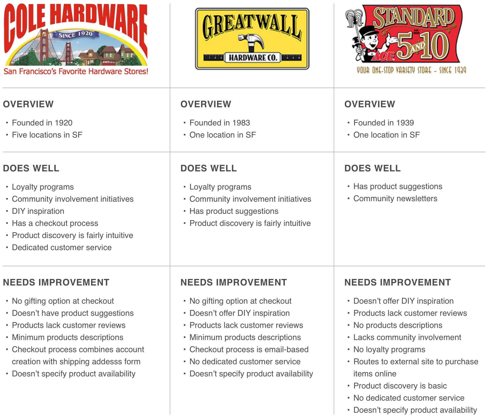The competition generally provided relatively easy product discovery, inconsistent product information, inefficient checkout processes, mixed customer support, but generally great community outreach efforts.
Card Sorting
To hone in on product discovery issues, I tasked my colleagues to mimic Progress Hardware prototypical users and organize product inventory into meaningful categories.
I chose to use card sorting because Progress Hardware has a lot of items and I wanted to make sure that the users would be able to conveniently find the products they are looking for.
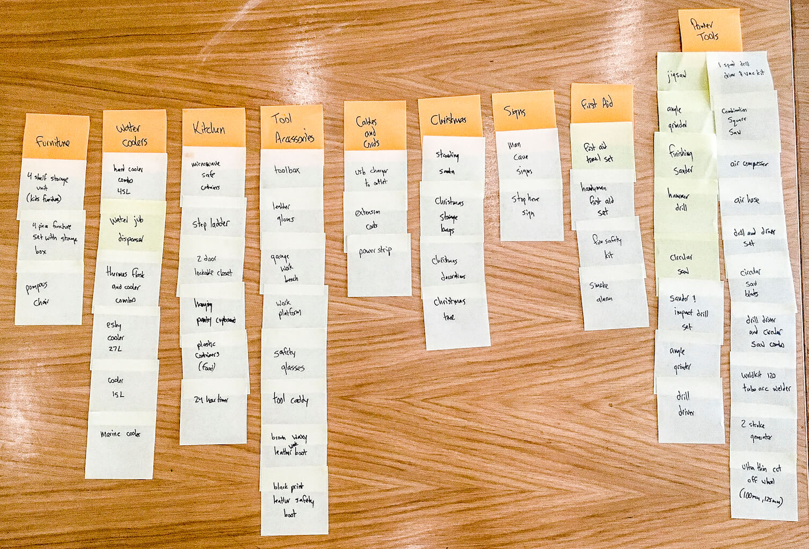One thing was immediately clear:
The number of categories the users came up with was overwhelming and lacked clarity; users categorized products differently depending on the knowledge of hardware.
Next, I did an iteration to add a second level of categorization and tweak some category labels, so then I could do another round of card sorting.
Users had a much easier time finding items after they arranged sub-categories into meta-categories.
Site Map
I made a site map to:
- Understand how Lisa, Thomas and Andy would use the site to meet their needs
- Discover which screens I needed to sketch out
Since the products tab is significantly more complex than the other tabs, I stacked the pages on page 1, then expanded on them on page 2.
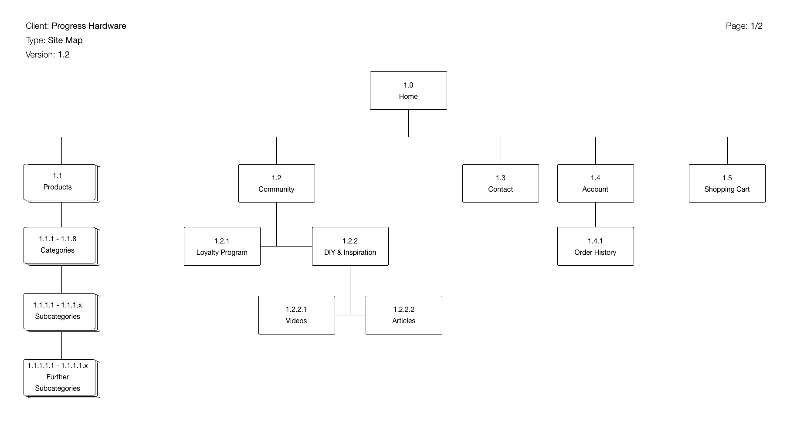 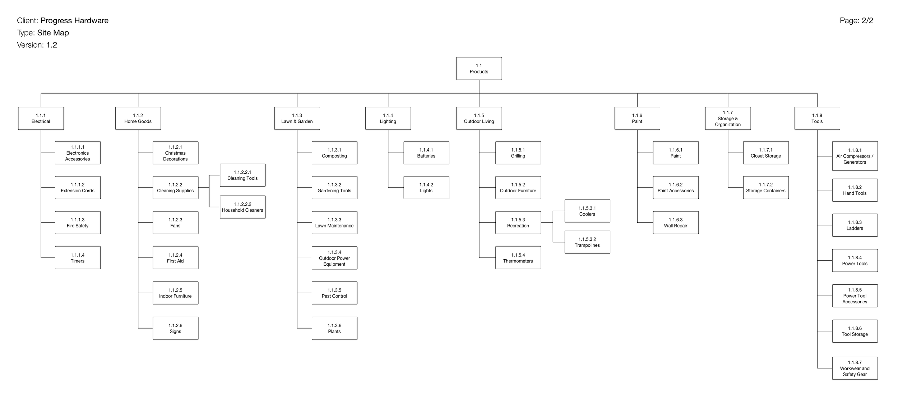The product category, sub-category and detail pages are the most important to meet the core needs of product discovery and product information.
User Flows
To understand how each user would optimally use the site, I created a flow for each persona, as well as a checkout flow.
Thomas
Goal: Find and purchase a gift for his hardware-savvy brother
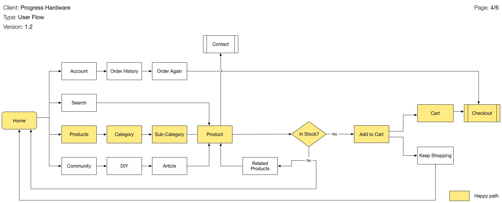Thomas would likely be looking for gift ideas, new items or bestsellers. His best option would be the products tab, where he could find new innovations that his brother likely doesn’t own.
Checkout
Goal: Design the checkout user flow to be as efficient and intuitive as possible
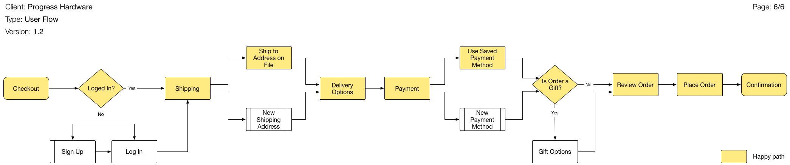Thomas will likely need to specify a shipping address and payment method, then go through gift options.
(If his experience is positive and he turns into a repeat customer, his checkout flow will be shorter since his shipping address and payment options will be saved.)
Wireframes
I sketched out wireframes to visually map out functionality and features to meet the users needs while minimizing their pain points.
I started with pen and paper to sketch to main functionality that the personas need.
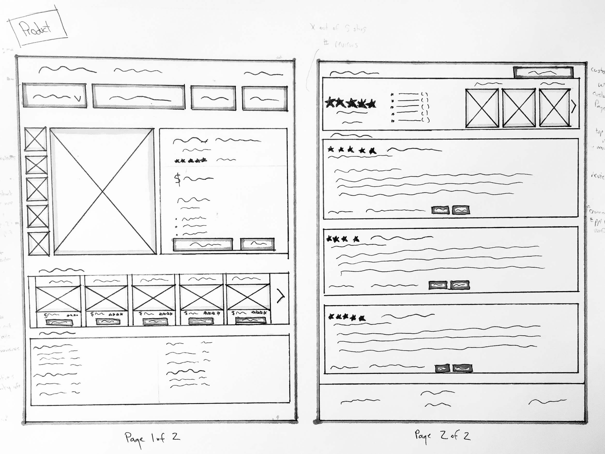Starting with wireframes that didn’t have explicit text or images allowed me to modularize the design into specific components that I moved around to present the features in an intuitive and efficient way.
I then added in a slight grayscale to buttons, images and navigation tabs to begin to distinguish a visual hierarchy. Once all of the pages had been laid out, I went back to the core problem statement and user needs, which I cross-referenced with the wireframes.
After a round of testing, one of the issues I found was that when users were on the product page, they weren’t able to easily navigate back to the categories page if they chose an undesirable product.
Taking this into account, I did another iteration that added a breadcrumb menu to help the users go back to the categories page to discover new products.
Prototype
I put together a clickable prototype to portray how users would more realistically use the website, and to do usability testing to resolve any issues.
I chose to build the prototype at a relatively-high level fidelity to get user feedback on a content-level since I had already smoothed out most of the usability issues about information architecture.
You can access the full-resolution and interactive prototype here.
Usability Testing
I conducted usability tests with colleagues who represented Lisa, Thomas and Andy to address problems and frustrations they had using the site.
This is the scenario I tasked the users:
- Find a product to purchase
- Add the item to the shopping cart
- Find another item to purchase
- Go through the checkout process
This is the main feedback I got:
This is the order review page — I am supposed to have all of my information ready to go!
In the prototype, I had placed the delivery options in the order review page. When all three of the users went through the checkout process, they expected to choose how fast the items would be shipped after they selected their shipping address.
How can I continue shopping from here?
When Lisa added an item to their cart and was routed to the shopping cart page, she expected an option to keep shopping for the other items in her DIY project. In the prototype, however, the only option was to proceed with the checkout process.
What about the billing address?
In this scenario, Andy had recently moved and needed to change credit cards. Going through checkout process, he was able to add his new card number, but was unable to alter the billing address.
Final Iterations
- Moved the delivery options to after the shipping address page
- Added a button to continue shopping on the shopping cart page
- Added an option to change the billing address when entering in a new address and when on the order review page
Next Steps
The next steps for the Progress Hardware site include conducting additional usability testing and developing branding and visual design for the prototype.
Additional recommendations to meet core needs include:
- Incorporating a 1-click order feature on the product pages to streamline purchasing, particularly for return users whose shipping addresses and payment information are already on file. I would need to test and validate first.
- Partnering with Uber Rush or Postmates to allow Progress Hardware to provide enhanced convenience of same-day delivery. This is perhaps outside the scope of the project, but if affordable, could be a viable upgrade if Progress Hardware is willing to expand beyond its mom-and-pop background and adopt third-party delivery systems.
Overall, the design for Progress Hardware’s e-commerce site definitely improves the product selection and fulfillment processes of this local hardware store, while staying true to core user needs and values.